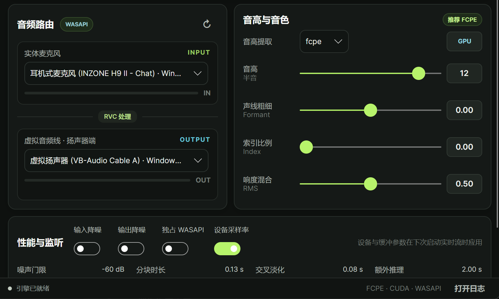
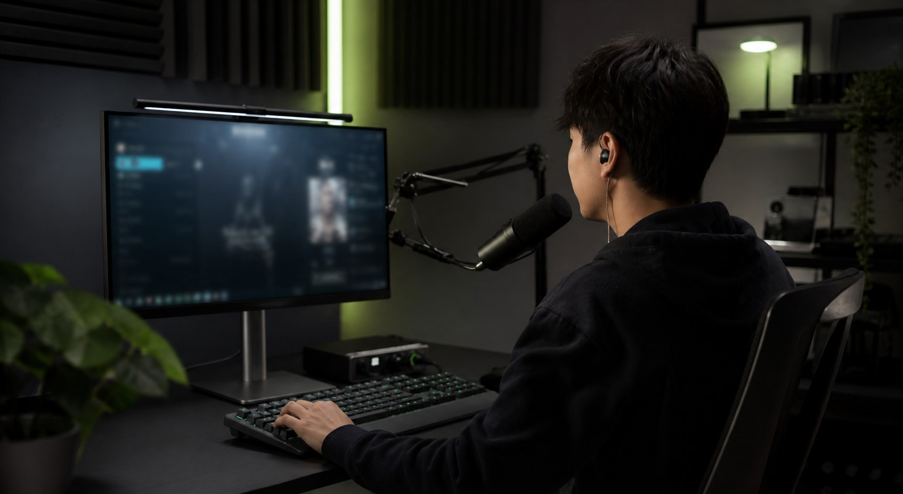

REAL-TIME
实时转换，不打断表达
说话、调节、继续说。音高、声线粗细、索引比例和响度混合都可以在工作中即时调整。
RVC Studio 把音色模型、麦克风、虚拟声卡与声音调节收进一个桌面工作台。打开它，让新的声音直接进入游戏、语聊、直播与录音。

从选择音色到送入目标软件，常用操作都在清晰、安静的工作台里完成。
说话、调节、继续说。音高、声线粗细、索引比例和响度混合都可以在工作中即时调整。
选择 RVC 音色模型，可选特征索引，快速切换适合当下内容与角色的声音。
在一个界面选择实体麦克风与虚拟音频线，把转换后的声音送往语聊、游戏、直播或录音软件。
FCPE 默认音高提取配合降噪、门限、交叉淡化与缓冲调节，从即刻开用到精细优化，都有合适的入口。
输入从哪里来、声音如何变化、最后送到哪里去，都在同一视线内。
实体麦克风、RVC 处理与虚拟输出沿信号方向排列，检查链路更直观。
音高、Formant、索引与响度集中呈现，当前值始终清楚。
GPU、CUDA、引擎状态与输入输出电平，帮你快速确认声音正在工作。

你只需要专注于内容。RVC Studio 负责把目标音色稳定送进正在使用的软件。
第一次使用也能快速理解整条链路。
接入你正在使用的实体麦克风或音频接口。
选择模型，按需要微调音高与音色参数。
选择虚拟输出，即可进入游戏、语聊、直播或录音。
不会。实时音频帧始终在本机完成处理。账号、会员与版本检查需要联网，但不会上传你的声音。
可以。完整安装包包含可用的默认模型与索引，也可以随时换成自己的 RVC 音色资源。
不需要。离线安装包已经包含程序与所需运行环境，按安装向导完成即可。
可以。未开通会员的设备每天有 1 小时免费实时变声额度，只在实时音频流运行时计时。